Lay Out a Form That Resizes Well
Place labels and inputs, connect them to table columns, line up clean rows, and choose what should move or stretch when the form area changes size.
This walkthrough follows the current Admin Forms implementation. Every screenshot was captured directly from the running CSharpDB.Admin project using a fictional customer record. Select a screenshot to open it at full size. Step 9 also includes an interactive example to demonstrate resizing. You will build a simple customer-details layout and learn exactly what the designer's alignment buttons and anchor presets do.
1. Start a form
Open CSharpDB Admin with a database containing a table you can use for practice. The examples call that table customers, with first_name, email, credit_limit, and notes columns. Use equivalent columns from your own table; these names are examples, and this tutorial does not create a table for you.
There are two useful starting points:
- Start with generated controls: right-click your table in Object Explorer and choose Design Form…. The designer creates a label and a bound input for each column. It chooses the input type from the column type and lays out a single vertical column of pairs.
- Practice from a blank canvas: use New Form, then choose the table in Select source…. This route currently sets the source without generating controls. Use it for the manual placement exercises below.
Double-click the form title to name it Customer Details Practice. Press Enter or leave the title box to commit the name. Choose Desktop and Fixed in the toolbar for the first exercises. The Desktop design width is 1200 pixels.
If you started with generated controls, select and adjust the existing pairs instead of adding a second copy of each field. Generated labels and inputs remain independently editable.
Checkpoint: the correct table is selected, the form has a recognizable name, and Desktop / Fixed is active.
2. Know the workspace
{kind=link}
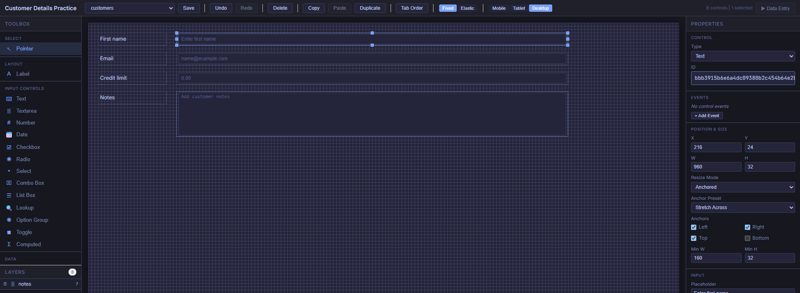
Toolbox contains control types and the Align tools. Layers lists the controls already on the form and helps select items that overlap. The canvas shows their positions. Properties shows control settings when exactly one control is selected.
The boxes on the design canvas are previews. Enter real values in Data Entry after saving; a disabled-looking input in the designer is normal.
3. Place your first label and input
Place the label
- In Toolbox, under Layout, click Label.
- Click an empty point near the top-left of the canvas. This places one label. You choose the tool and then click the canvas; you do not drag the toolbox item onto it.
- The designer returns to Pointer mode after placement. With the label selected, find the Text section in Properties and set Text to
First name. - Under Position & Size, set X = 24, Y = 24, W = 168, and H = 32.
Place the input beside it
- In Toolbox, under Input Controls, click Text.
- Click an empty part of the canvas to the right of the label.
- Set X = 216, Y = 24, W = 960, and H = 32.
- Leave Resize Mode at Anchored for now. You will set its preset after arranging the rows.
These values give the label a 24-pixel left margin, leave a 24-pixel gap between label and input, and end the input at X = 1176: 24 pixels before the Desktop canvas's right edge. Scroll the designer horizontally if your window cannot display all 1200 pixels.
| Setting | Meaning | How to change it |
|---|---|---|
| X | Distance from the canvas's left edge to the control's left edge. | Drag horizontally, or enter a number. |
| Y | Distance from the canvas's top edge to the control's top edge. | Drag vertically, or enter a number. |
| W | The control's design width. | Drag a side/corner resize handle, or enter a number. |
| H | The control's design height. | Drag a top/bottom/corner resize handle, or enter a number. |
New forms use an 8-pixel snap grid. Placement, dragging, resizing, and numeric rectangle edits snap to that grid. Use multiples of 8 for predictable values. Existing generated controls can have other sizes—for example, the default generator uses a 34-pixel row height—so a numeric edit may snap an old value to the nearest grid step.
Checkpoint: one static label and one input sit side by side with the same Y and H. They are two separate controls.
{kind=link}
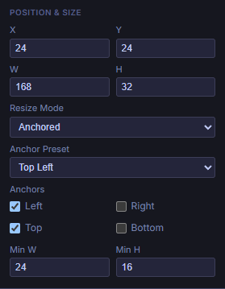
{kind=link}
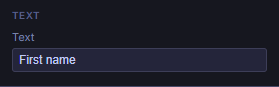
4. Connect the input to a data column
- Select the Text input, not its label.
- In Properties, find Data Binding → Field and select
first_namefrom the source table. - Keep Mode = Two Way for an ordinary editable input.
- Optionally set Input → Placeholder to
Enter first name. Leave Read Only unchecked for an editable field.
Text on a Label changes its caption. Placeholder provides an input hint. Field connects an input to data. Changing a caption or placeholder never changes the input's binding. A Label is static text and has no Data Binding section.
If your table has identity or row-version columns, generated controls for those fields are read-only. View-backed forms are also read-only sources. Practice editing with ordinary writable table columns.
| Value you want to enter | Toolbox control | What to configure |
|---|---|---|
| Short text or an email address | Text | Field; optional Placeholder and Max Length. The Text control is not a separate email validator. |
| Several lines of notes | Textarea | Field, Placeholder, and a larger H. |
| A numeric amount | Number | A compatible numeric Field. |
| A date | Date | A compatible date Field. This is the designer's date picker. |
| A yes/no value | Checkbox | A compatible boolean Field and its own Text caption. |
| A fixed set of choices | Select | Field plus Choices → Static Options, one value|Label per line. |
| A value selected from another table | Lookup | Field and the lookup source, display field, and value field. |
Checkpoint: selecting the input shows the intended Field. Selecting its label shows the caption instead.
{kind=link}
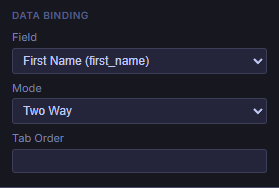
first_name through Admin's Field dropdown. Its label caption is configured separately.5. Build the remaining rows efficiently
Use this layout as a target. The numbers refer to Desktop positions. You can enter them directly, or roughly place the controls and use the next section to tidy them.
| Row / Y | Label text | Input type / Field | Label X, W, H | Input X, W, H |
|---|---|---|---|---|
| 1 / 24 | First name | Text / first_name | 24, 168, 32 | 216, 960, 32 |
| 2 / 72 | Text / email | 24, 168, 32 | 216, 960, 32 | |
| 3 / 120 | Credit limit | Number / credit_limit | 24, 168, 32 | 216, 960, 32 |
| 4 / 168 | Notes | Textarea / notes | 24, 168, 32 | 216, 960, 112 |
Duplicate a pair
- Click the first label, then hold Shift and click its input. Both should show as selected. You can also Shift-click their entries in Layers.
- Choose Duplicate in the toolbar or Toolbox. Ctrl + D is the keyboard shortcut when the designer has focus.
- Select each new control separately and set its Y to 72. Set the new label's X to 24 and the input's X to 216.
- Change the new label's Text to
Emailand the new input's Field toemail. Update any copied placeholder as well. - Repeat for the remaining rows. For each new input, choose Control → Type to change Text to Number or Textarea, then verify its Field and size.
A duplicate has a new control ID but keeps the original's binding and properties. Always change the copied Field when creating a different data point. A duplicated First name input still edits first_name until you rebind it.
Select precisely
A plain click selects one control. Shift-click adds another; it does not toggle an already selected control off. To rebuild a selection, click empty canvas first. In Pointer mode, dragging a rectangle across empty canvas selects intersecting controls; hold Shift to add that area to the selection.
Use Layers when selecting around overlapping items. Multi-selection supports actions such as alignment, copy, duplicate, and delete. The canvas drag currently moves the control you grabbed, rather than translating the entire selection as a group. Properties edits also require a single selected control.
6. Align edges and distribute rows
Alignment changes where controls are placed now. Anchors, covered next, describe how a control responds to a later change in the form area's size. Do the placement work in Desktop first.
Make two clean columns
- Select only the labels. In Toolbox → Align, choose Left. Their left edges move to the smallest X among those labels.
- Clear the selection, select only the inputs, and choose Left again. Their left edges line up independently of the labels.
- Select a label and its matching input, then choose Top to put them on the same Y. Repeat for the other rows that need correction.
- For consistent input widths, select each input individually and enter the same W. Align does not equalize widths or heights.
Keep label and input columns separate when aligning Left or Right. Selecting every label and input and choosing Left would move them into one overlapping column. Likewise, choosing Top for an entire vertical stack collapses it into one row.
| Button | Selection needed | Exact result |
|---|---|---|
| Left | 2 or more | All selected left edges move to the leftmost selected edge (smallest X). |
| Right | 2 or more | All selected right edges move to the rightmost selected edge (largest X + W). |
| Top | 2 or more | All selected top edges move to the topmost selected edge (smallest Y). |
| Bottom | 2 or more | All selected bottom edges move to the lowest selected edge (largest Y + H). |
| Dist H | 3 or more | Spaces left-edge X positions equally between the first and last controls in X order. |
| Dist V | 3 or more | Spaces top-edge Y positions equally between the first and last controls in Y order. |
The reference edge is determined by the selection's outermost position, not by which control you clicked last. If you need X = 24 exactly, correct any stray label lying further left before using Left.
Space a vertical stack evenly
- Put the first label at Y = 24 and the last label at Y = 168.
- Select the four labels and choose Dist V. The two inner labels move to Y = 72 and 120. The first and last keep their positions.
- Select each label/input pair and choose Top to match the input to its label, or repeat Dist V on the four inputs with the same endpoints.
{kind=link}
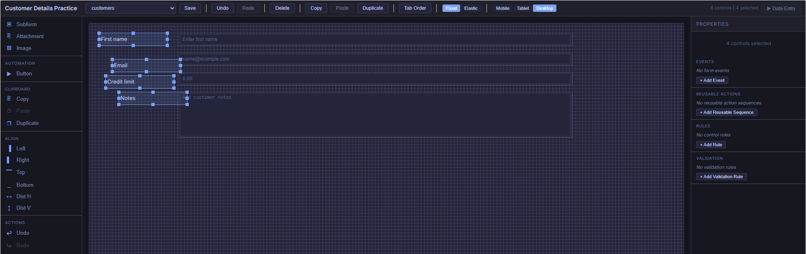
{kind=link}
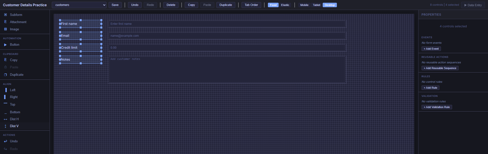
Dist V is not an equal-empty-gap command. It spaces top positions, so controls of different heights can have different gaps or overlap. For a tall Notes box, keep the same row start but leave sufficient space beneath it. Dist H has the same distinction for widths. These tools do not resize or automatically avoid collisions.
Use Undo immediately if an alignment result is wrong. Perform these operations on Desktop: the alignment tools and numeric Position & Size fields edit the base rectangle, even when another breakpoint is selected.
Checkpoint: all labels share X = 24, all inputs share X = 216, and every pair has the same Y.
7. Understand what anchors preserve
In Fixed layout with Resize Mode = Anchored, anchors preserve the control's distances from chosen edges of its containing form area. A right anchor refers to the form area's right edge, not the neighboring control. It does not attach a label to its input.
- Left only: keep the left distance and control width. More room appears on the right when the form widens.
- Right only: keep the right distance and control width. The control moves horizontally as the form widens or narrows.
- Left + Right: keep both distances. The control's width grows or shrinks to fit between them.
- Top only / Bottom only: apply the same idea vertically, keeping height constant.
- Top + Bottom: keep both vertical distances. Height grows or shrinks with the containing area.
The margin comes from where you placed the control
The main form uses a 1200-pixel Desktop reference width. For the input you placed at X = 216 with W = 960, the right margin is 1200 − 216 − 960 = 24 pixels. With Stretch Across, a 1000-pixel form area gives it a width of 1000 − 216 − 24 = 760 pixels. Its left edge stays at 216.
Compare a default generated input at X = 220 with W = 320: its right margin is 660 pixels. Applying Stretch Across preserves that large right margin. To make it fill a row, first widen the input toward the Desktop right edge, then choose Stretch Across. The preset does not reposition the control or invent a smaller margin.
Height and minimum sizes
The main form's reference height is at least 500 pixels; if a control extends further down, it grows to the lowest control edge plus 24 pixels. The designer's visible canvas is not itself that reference height. Bottom anchors preserve the margin relative to the runtime reference area, not the bottom of your monitor. Vertical movement or stretching is visible only when the containing form area actually changes height.
Min W and Min H are runtime lower limits, with default values of 24 and 16. For this exercise, set an input's Min W to 160 and Min H to 32. Stretching cannot make it smaller than these limits in the wide Fixed layout. If there is too little room, minimum sizes may force overflow or overlap; they do not provide automatic collision handling. Narrow stacked mode uses its own sizing rules.
Controls hosted inside a Tab Control use that container's child form area as their anchor reference. The numeric examples here are for top-level controls on the main form.
8. Choose an anchor preset
- Select exactly one control.
- Open Properties → Position & Size.
- Set Resize Mode to Anchored.
- Choose an Anchor Preset. The Left, Right, Top, and Bottom checkboxes below it update to show the combination.
- Save and check the result in Data Entry at another size.
{kind=link}
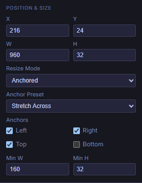
{kind=link}
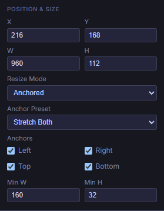
| Preset | Enabled edges | When the form area grows | Typical use |
|---|---|---|---|
| Top Left | Left, Top | Position from the top-left and size stay constant. | Labels; compact controls near the top-left. |
| Top Right | Right, Top | Moves horizontally with the right edge; size stays constant. | A fixed-size control near the top-right. |
| Bottom Left | Left, Bottom | Moves vertically with the bottom edge; size stays constant. | A footer item near the bottom-left. |
| Bottom Right | Right, Bottom | Moves with both far edges; size stays constant. | A fixed-size action control near the bottom-right. |
| Stretch Across | Left, Top, Right | Width changes; Y and height stay constant. | Text, Number, or Select inputs filling a row. |
| Stretch Down | Left, Top, Bottom | Height changes; X and width stay constant. | A tall, fixed-width panel or text area. |
| Stretch Both | Left, Top, Right, Bottom | Width and height change between the four margins. | A large Notes area or data region with room to expand. |
| Custom | Your checkbox combination | Follows the selected edges. | For example, a bottom strip using Left + Right + Bottom. |
Custom is a description of the checkbox combination. Selecting Custom alone makes no changes. To build a bottom strip, start with Stretch Across, turn Bottom on, and turn Top off. The preset displays Custom because Left + Right + Bottom is not one of the named presets.
The editor keeps at least one horizontal and one vertical edge enabled. If you uncheck the only horizontal edge, it enables the opposite one; it does the equivalent vertically. There is no center or completely unanchored preset.
Anchored versus Scale With Form
Scale With Form converts the control's X, Y, W, and H to percentages of the reference area. At a wider form size, it changes both horizontal position and width proportionally. It also scales vertical position and height when the containing height changes. This is percentage-based control geometry; it does not scale the font like an image zoom.
Anchor checkboxes remain visible, but their edge rules are not used for the Fixed layout's geometry while Scale With Form is selected. Choosing a preset does not automatically switch Resize Mode back to Anchored. Use Anchored for fixed margins and ordinary input heights; try Scale With Form when proportionally changing the whole control rectangle is the intended behavior.
9. Try the anchor demo
Choose a preset and change the form's width or height. The dashed outline marks the original 1200 × 500 reference area. The sample control starts at X = 216, Y = 72, W = 960, H = 112, with Min W = 160 and Min H = 32.
Interactive example: the sliders below resize this example so you can see how an anchored control would respond. They are tutorial controls; Admin does not have these sliders. To check your own form in Admin, save it, open Data Entry, and resize the browser window.
This example demonstrates anchor geometry in wide Fixed layout with a constant reference rectangle. It does not simulate Elastic grids, narrow-screen stacking, data binding, or reference-height changes caused by adding controls. See step 11 for screenshots of the actual Admin form at different sizes.
Left, Top, and Right are enabled. The control stretches horizontally while its top position and height stay fixed.
- Stretch Across: move width to 1440. X stays 216 and W becomes 1200; the right margin remains 24.
- Top Right: at width 1440, W stays 960 and X becomes 456. The control moves instead of stretching.
- Stretch Both: keep width 1440 and increase height to 800. The control becomes 1200 × 412, with X and Y unchanged.
- Scale With Form: at 1440 × 800, X becomes 259.2, Y becomes 115.2, W becomes 1152, and H becomes 179.2. All four numbers scale proportionally.
- Try a narrow width: return to Anchored and compare Top Right with Stretch Across. A fixed-width control can extend outside the form area; an anchor is not an automatic fit-to-screen command.
10. Apply the settings to your form
Recipe A · Labels stay put; inputs grow across
For each label, use Anchored → Top Left. For each input, use Anchored → Stretch Across. Keep the inputs near the Desktop right edge before applying the preset; the worked layout ends at X = 1176.
This is a useful starting point for the four-row customer form. The label column stays 168 pixels wide, the gap stays 24 pixels, and the inputs absorb horizontal changes. Set all label/input pairs to the same Y within their row. Each pair remains independent, so select and configure both controls deliberately.
Recipe B · A Notes area uses the spare height
Keep the Notes label at Top Left. Set its Textarea to Stretch Both if you want its height to follow the form area's height. Give it a usable Min H, such as 96, and keep controls below it out of its expansion region.
For the example at Y = 168 and H = 112 on a 500-pixel reference height, the bottom margin is 220 pixels. If you want the Notes box to reach closer to the bottom, first increase its design H; the preset preserves the margin you designed. If it should remain 112 pixels tall, use Stretch Across instead.
Recipe C · A fixed-size control follows the right edge
For an existing action button near the right side, use Top Right or Bottom Right. Place it near that edge first. Its W and H remain fixed, while its position follows the edge. Configure the button's action separately; anchors only govern layout.
For a footer area that should widen but remain at the bottom, use Custom: Left + Right + Bottom. It stretches horizontally and keeps its height. Verify it does not collide with a growing Notes area.
11. Check Fixed, Elastic, and smaller layouts
The toolbar's Fixed / Elastic choice applies to the form's runtime layout. The selected control's Anchored / Scale With Form choice is a separate setting.
| Runtime layout | What controls placement | What to verify |
|---|---|---|
| Fixed, wider than the narrow stacked view | Absolute control rectangles, anchor margins, or percentage geometry from Scale With Form. | Margins, minimum sizes, overlap, and available height. |
| Elastic, wide layout | A 12-column grid with automatic placement. Control widths determine column spans; the grid controls placement and sizing. | Whether each label stays beside its intended input and rows wrap as intended. |
| Elastic, tablet-sized layout | An 8-column grid using the tablet rectangle widths for spans. | Column spans, order, and breakpoint visibility. |
| Narrow layout, 640 pixels or less | Both modes switch to a vertical stack with full-width controls and touch-friendly input sizing. | Label/input order, hidden controls, and tall text areas. |
Responsive CSS checks both the viewport and the named form-area container. A large browser window can still give the form a narrow area when surrounding panels occupy space. Elastic uses grid flow rather than anchored absolute placement; edge presets and Scale With Form do not control its geometry in the same way as Fixed.
Use the designer's breakpoint buttons deliberately
Desktop, Tablet, and Mobile use design widths of 1200, 768, and 375 pixels. The design canvas shows rectangles; it is not a live simulation of all Data Entry CSS, anchor stretching, or Elastic flow.
- Finish the base placement, numeric X/Y/W/H edits, and alignment on Desktop.
- Switch to Mobile or Tablet to inspect the corresponding design view. Select a control to find Breakpoint: mobile/tablet → Visible at this breakpoint.
- Dragging or using resize handles in those views stores breakpoint-specific rectangle overrides. The numeric Position & Size fields and Align tools still edit the base rectangle; use the canvas handles for breakpoint-specific geometry.
- For mobile stacking, keep each label just before its input in reading order. Runtime stack order is derived from the Mobile rectangle's Y and then X; if there is no override, it uses the base rectangle. Matching Y and placing the label to the left works naturally.
- Save, open Data Entry, and resize the real browser/form area to verify the final result.
Tablet overrides influence Elastic column spans, and Mobile overrides influence stack order. They are not a general replacement for the Fixed renderer's Desktop anchor geometry. If an item is hidden at a breakpoint, hide its separate label too when appropriate.
For an initial form, complete and verify the Fixed version first. If you try Elastic afterward, check the whole layout: its automatic grid placement does not preserve every Desktop X position or blank gap. Keep whichever mode matches how you want the form to behave.
The same saved form at three real Admin sizes
These captures show the customer form loaded in Admin's Data Entry view. The labels use Top Left and all inputs, including Notes, use Stretch Across. The sample values are fictional. The form-area crops below preserve the actual rendered pixels.
{kind=link}
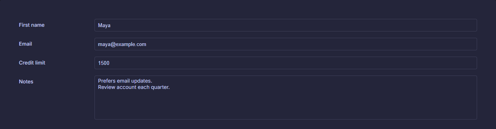
{kind=link}
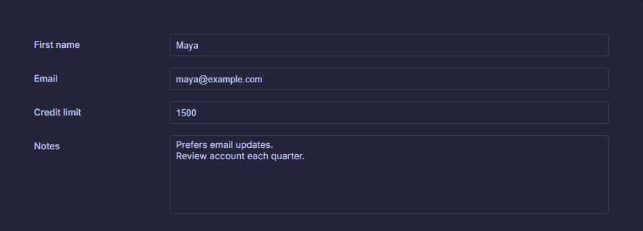
{kind=link}
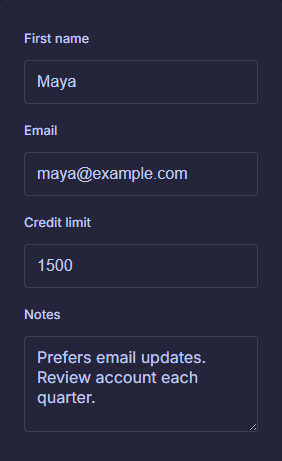
12. Save and verify in Data Entry
- Choose Save in the designer and wait for Saved!. A selected source is required.
- Choose Data Entry. This action becomes available after the form has been saved.
- Open a record and confirm each field displays the expected value. In your practice data, try editing an ordinary writable field and saving the record.
- At a wide form size, verify labels stay put and Stretch Across inputs maintain their intended left and right margins.
- Reduce the available width and check intermediate sizes for overlap. Then check the narrow stacked view for label/input order.
- If you used Bottom anchors or vertical stretching, change the available height too. Confirm the form's container actually changes height before expecting vertical movement.
- Return to the designer for adjustments. Save again, then reopen Data Entry to check the updated saved definition. Reopen the designer later to verify the layout persisted.
Designer Save stores the form definition. Saving a record in Data Entry stores record data. Unsaved design edits are not the definition that Data Entry loads.
Finished: your labels and inputs are bound correctly, rows line up, the chosen anchors behave as expected, and the saved form works at both wide and narrow sizes.
Troubleshooting
| What you see | What to check |
|---|---|
| Choosing a table leaves a blank form. | New Form sets the source only. Place controls manually, or create a form through the table's Design Form… action. |
| The label is correct, but the input edits the wrong column. | Select the input and inspect Data Binding → Field. Copies keep the original binding. |
| A control will not accept typing on the canvas. | The canvas is a design preview. Save and open Data Entry. |
| Control properties disappear after selecting several items. | Properties edits one control at a time. Multi-selection exposes selection actions instead. |
| Left / Top is disabled. | Select at least two controls. Dist H / Dist V require at least three. |
| Alignment moves the wrong items together. | Undo; select just one column for Left/Right, or one label/input pair for Top. |
| Distributed controls still have uneven gaps. | Distribution equalizes X or Y starting positions. Match W/H first when you need equal empty gaps. |
| Stretch Across leaves a huge right-hand gap. | Its right margin comes from the Desktop X and W. Widen the control near the reference right edge before applying the preset. |
| A preset seems to have no effect. | Check Resize Mode = Anchored and runtime Fixed layout. Resize Data Entry; the canvas itself does not animate anchor behavior. |
| Bottom Right does not move to the bottom of the screen. | It preserves the existing margin within the containing form area. It does not dock to the browser window or change the original margin. |
| Anchors behave differently on a small screen. | The narrow layout intentionally stacks controls. Check available form width, including surrounding panels. |
| Inputs overlap while shrinking. | Review minimum sizes, design margins, and the space available before stacked mode begins. Anchors do not resolve collisions. |
| A mobile adjustment changed Desktop too. | Numeric rectangle edits and alignment target the base rectangle. Use drag/resize handles for breakpoint overrides. |
| Data Entry still shows the old arrangement. | Save the designer, then reopen Data Entry so it loads the updated form definition. |
Quick reference
| Action | How |
|---|---|
| Place a control | Click its Toolbox type, then click empty canvas. It places once and returns to Pointer. |
| Add to selection | Shift-click controls or Layers entries; Shift-drag a selection rectangle in Pointer mode. |
| Clear selection / cancel a placement tool | Escape. Clicking empty canvas in Pointer mode also clears selection. |
| Copy / paste / duplicate | Toolbar or Toolbox buttons; Ctrl+C / Ctrl+V / Ctrl+D with designer focus. |
| Undo / redo a control edit | Undo / Redo buttons; Ctrl+Z / Ctrl+Y with designer focus. |
| Remove selected controls | Delete button, or Delete / Backspace with canvas focus. |
| Keep labels fixed | Fixed layout → Anchored → Top Left. |
| Let inputs fill the row | Place near the Desktop right edge → Anchored → Stretch Across. |
| Verify responsive behavior | Save → Data Entry → resize the actual form area. |
For a predictable workflow while editing text or numeric properties, use the visible toolbar buttons for designer commands. Finish the property edit and return focus to the canvas before using keyboard shortcuts.
Continue with the Admin UI guide, custom form controls, or more tutorials.
Implementation reference for maintainers
Checked against the repository source on September 5, 2026. This tutorial describes the current source implementation; installed releases may differ. Placement and selection are implemented in src/CSharpDB.Admin.Forms/Components/Designer/DesignCanvas.razor; alignment and breakpoint state in DesignerState.cs; property labels and anchor presets in PropertyInspector.razor; runtime geometry in FormRenderer.razor and src/CSharpDB.Admin.Forms/wwwroot/css/designer.css. These component filenames are relative to the same Designer directory. New-form initialization lives in src/CSharpDB.Admin.Forms/Pages/Designer.razor, with generated pairs supplied by Services/DefaultFormGenerator.cs in the Forms project.